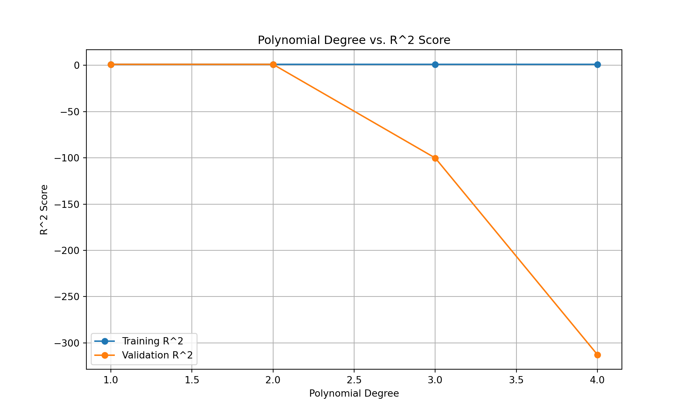
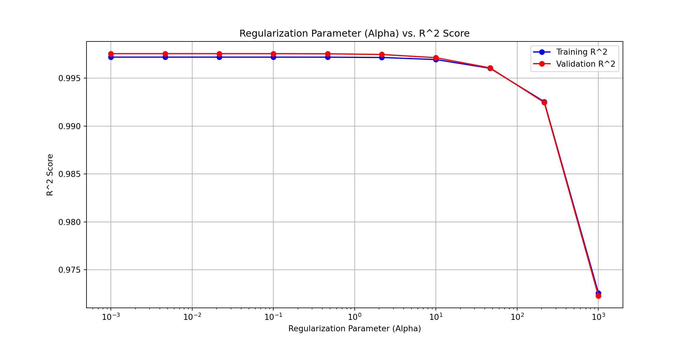

#hide all warnings
import warnings
warnings.filterwarnings("ignore")
#### Import all necessary libraries
# import all required libraries
import numpy as np
import xgboost as xgb
import pandas as pd
import seaborn as sns
import matplotlib as mpl
import matplotlib.pyplot as plt
from sklearn.model_selection import train_test_split
from sklearn.pipeline import make_pipeline
from sklearn.preprocessing import StandardScaler
from sklearn.model_selection import GridSearchCV
from sklearn.linear_model import LinearRegression
from sklearn.metrics import mean_squared_error
from sklearn.model_selection import cross_val_score, KFold
from sklearn.linear_model import SGDRegressor
from sklearn.linear_model import Ridge
from sklearn.preprocessing import PolynomialFeatureswhich ML algorithm should the organization use for higher accuracy?
Machine Learning
Python
XYZ, name hidden for security purpose, was established in 1910 to investigate the ecological factors contributing to the collapse of the Pacific sardine population. Its extensive time series data provides invaluable insights into the long-term impacts of environmental changes on marine ecosystems and the communities reliant on them, not only within the California Current System but also extending to the North Pacific and beyond on an international scale.
As a part of this project, I am supporting the XYZ in predicting the ocean carbon values, which is a crucial part of the marine ecosystem. The dataset contains 12 columns, with 1 response variable and 11 predictors. The response variable is the dissolved inorganic carbon (DIC) concentration in the ocean, which is a key component of the marine carbon cycle. The predictors include various physical and chemical properties of the ocean, such as temperature, salinity, and oxygen concentration.
The goal of this project is to develop two machine learning models that can accurately predict the DIC concentration in the ocean based on the given predictors. This model will help better understand the factors influencing ocean carbon levels and make data-driven decisions to protect marine ecosystems.
Stepwise Flow of the Project
- Linear Regression Model
- Fine Tuned XGBoost Model
Read the data and store ID:required during submission for validity check
#-----read train and test set
train_calcofi = pd.read_csv("data/train.csv")
test_calcofi = pd.read_csv("data/test.csv")
#collect the test ids for testcalcofi, required for submission dataset
test_ids = test_calcofi.id
test_calcofi = test_calcofi.drop(columns=['id'])Data cleaning
A model is only as good as the data.This step ensures that columns names are standarized, and the columns with inappropriate values are removed. The data is also checked for missing values. Incase of missing values, they are not imputed, but dropped. The CALCOFI did not provide claer guidance on how value should be imputted. So the best decision is to drop the rows with missing values.
#----inspect the head and take the insights of data
train_calcofi.head() id Lat_Dec Lon_Dec ... Salinity1 Temperature_degC DIC
0 1 34.385030 -120.665530 ... 34.198 7.82 2270.17
1 2 31.418333 -121.998333 ... 34.074 7.15 2254.10
2 3 34.385030 -120.665530 ... 33.537 11.68 2111.04
3 4 33.482580 -122.533070 ... 34.048 8.36 2223.41
4 5 31.414320 -121.997670 ... 34.117 7.57 2252.62
[5 rows x 19 columns]#### Data cleaning and preprocessing
#the column names are in snake case, change all to lowercase
train_calcofi.columns = map(str.lower, train_calcofi.columns)
test_calcofi.columns = map(str.lower, test_calcofi.columns)#remove the unnamed:12 column
train_calcofi = train_calcofi.drop(columns=['unnamed: 12'])
train_calcofi.rename(columns={'ta1.x': 'ta1'}, inplace=True)The data looks clean. Now, a relationships between columns must be established This helps in understanding the data, and also helps in feature selection. The next step below plots a correlation matrix. This will show correlated variables in the dataset.
The reason that the correlation matrix is plotted to see if linear regression can be useful. If the correlation matrix shows strong relationship between the response and predictors, then linear regression is a great algorithm. If not, then other models must be tested.
#plot correlation matrix
corr_matrix = train_calcofi.corr()
# Plot the heatmap
plt.figure(figsize=(8, 6))
sns.heatmap(corr_matrix, annot=False, cmap='coolwarm', fmt=".1f")
plt.title('Correlation Heatmap')
plt.show()
Linear regression model
# Select only the predictors columns, and change them to array
X = train_calcofi.drop(columns=['dic', 'id'], axis=1)
# Select only the response column and change it to array
y = train_calcofi['dic']
# Split the data into training, validation, and test sets
X_train, X_temp, y_train, y_temp = train_test_split(X, y, test_size=0.4, random_state=42)
X_val, X_test, y_val, y_test = train_test_split(X_temp, y_temp, test_size=0.5, random_state=42)
# Define the range of polynomial degrees to fit
degrees = range(1, 5) # From 1 to 5
# Initialize lists to store R^2 scores
train_r2_scores = []
val_r2_scores = []
# Loop through each polynomial degree
for degree in degrees:
# Create a pipeline with PolynomialFeatures, StandardScaler, and LinearRegression
model_pipeline = make_pipeline(PolynomialFeatures(degree=degree), StandardScaler(), LinearRegression())
# Fit the model pipeline to the training data
model_pipeline.fit(X_train, y_train)
# Calculate R^2 on the training set
train_r2 = model_pipeline.score(X_train, y_train)
train_r2_scores.append(train_r2)
# Calculate R^2 on the validation set
val_r2 = model_pipeline.score(X_val, y_val)
val_r2_scores.append(val_r2)
# Print the results for each degree
print(f"Degree: {degree}")
print(f" R^2 on training set: {train_r2}")
print(f" R^2 on validation set: {val_r2}")
print("-" * 40)Pipeline(steps=[('polynomialfeatures', PolynomialFeatures(degree=4)),
('standardscaler', StandardScaler()),
('linearregression', LinearRegression())])In a Jupyter environment, please rerun this cell to show the HTML representation or trust the notebook. On GitHub, the HTML representation is unable to render, please try loading this page with nbviewer.org.
Pipeline(steps=[('polynomialfeatures', PolynomialFeatures(degree=4)),
('standardscaler', StandardScaler()),
('linearregression', LinearRegression())])PolynomialFeatures(degree=4)
StandardScaler()
LinearRegression()
# Plotting the R^2 scores for training and validation sets
plt.figure(figsize=(10, 6))
plt.plot(degrees, train_r2_scores, label='Training R^2', marker='o')
plt.plot(degrees, val_r2_scores, label='Validation R^2', marker='o')
plt.xlabel('Polynomial Degree')
plt.ylabel('R^2 Score')
plt.title('Polynomial Degree vs. R^2 Score')
plt.legend()
plt.grid(True)
plt.show()
#from the above sample, it is clear that either degree 1 or 2 is best
# Define the polynomial degree
degree = 1
# Define the range of regularization parameters (alpha values) to test
alphas = np.logspace(-3, 3, 10) # e.g., 10^-4 to 10^4
# Initialize lists to store R^2 scores
train_r2_scores = []
val_r2_scores = []
# Loop through each alpha value
for alpha in alphas:
# Create a pipeline with PolynomialFeatures, StandardScaler, and Ridge regression
model_pipeline = make_pipeline(PolynomialFeatures(degree=degree), StandardScaler(), Ridge(alpha=alpha))
# Fit the model pipeline to the training data
model_pipeline.fit(X_train, y_train)
# Calculate R^2 on the training set
train_r2 = model_pipeline.score(X_train, y_train)
train_r2_scores.append(train_r2)
# Calculate R^2 on the validation set
val_r2 = model_pipeline.score(X_val, y_val)
val_r2_scores.append(val_r2)
# Print the results for each alpha
print(f"Alpha: {alpha}")
print(f" R^2 on training set: {train_r2}")
print(f" R^2 on validation set: {val_r2}")
print("-" * 40)Pipeline(steps=[('polynomialfeatures', PolynomialFeatures(degree=1)),
('standardscaler', StandardScaler()),
('ridge', Ridge(alpha=1000.0))])In a Jupyter environment, please rerun this cell to show the HTML representation or trust the notebook. On GitHub, the HTML representation is unable to render, please try loading this page with nbviewer.org.
Pipeline(steps=[('polynomialfeatures', PolynomialFeatures(degree=1)),
('standardscaler', StandardScaler()),
('ridge', Ridge(alpha=1000.0))])PolynomialFeatures(degree=1)
StandardScaler()
Ridge(alpha=1000.0)
# Plotting the R^2 scores for training and validation sets
plt.figure(figsize=(12, 6))
plt.plot(alphas, train_r2_scores, label='Training R^2', marker='o', linestyle='-', color='b')
plt.plot(alphas, val_r2_scores, label='Validation R^2', marker='o', linestyle='-', color='r')
plt.xscale('log') # Log scale for alpha values
plt.xlabel('Regularization Parameter (Alpha)')
plt.ylabel('R^2 Score')
plt.title('Regularization Parameter (Alpha) vs. R^2 Score')
plt.legend()
plt.grid(True)
plt.show()
#finalize the model
# Split data into training and validation sets
X_train, X_val, y_train, y_val = train_test_split(X, y, test_size=0.2, random_state=42)
# Define the polynomial degree and regularization parameter (lambda)
degree = 1
alpha = 50 # Regularization parameter
# Create and fit the model pipeline
model_pipeline = make_pipeline(
PolynomialFeatures(degree=degree),
StandardScaler(),
Ridge(alpha=alpha)
)
# Fit the model to the training data
model_pipeline.fit(X_train, y_train)Pipeline(steps=[('polynomialfeatures', PolynomialFeatures(degree=1)),
('standardscaler', StandardScaler()),
('ridge', Ridge(alpha=50))])In a Jupyter environment, please rerun this cell to show the HTML representation or trust the notebook. On GitHub, the HTML representation is unable to render, please try loading this page with nbviewer.org.
Pipeline(steps=[('polynomialfeatures', PolynomialFeatures(degree=1)),
('standardscaler', StandardScaler()),
('ridge', Ridge(alpha=50))])PolynomialFeatures(degree=1)
StandardScaler()
Ridge(alpha=50)
# Evaluate the model
train_r2 = model_pipeline.score(X_train, y_train)
val_r2 = model_pipeline.score(X_val, y_val)
print(f"Training R^2 score for Linear regression: {train_r2}")Training R^2 score for Linear regression: 0.9964417610035372print(f"Validation R^2 score for linear regression: {val_r2}")Validation R^2 score for linear regression: 0.9964454374974874The base linear regression model has worked well with 1 degree polynomial and low regularization parameters, with mean squared error of 36 on testing set, meaning ocean carbon values(DIC) was off by 36 point on average for the prediction test.
Can XGBoost perform better ?
The next step involves using XGboost for making the prediction, Extreme Gradient Boosting, also called the queen of the ML models is one of the most robust models. Base XGBOOST model (no tuning: Out of Box model) Note:XGBoost works on its own object type, which is Dmatrix. So, datatype conversion is required.
# Create regression matrices, this is requirement for xgboost model
dtrain_reg = xgb.DMatrix(X_train, y_train, enable_categorical=True)
dtest_reg = xgb.DMatrix(X_test, y_test, enable_categorical=True)# use cross validation approach to catch the best boosting round
n = 1000
model_xgb = xgb.cv(
dtrain=dtrain_reg,
params = {},
num_boost_round= n,
nfold = 20, #number of folds for cross validation
verbose_eval=10, #record rmse every 10 interval
early_stopping_rounds = 5,
as_pandas = True#stop if there is no improvement in 5 consecutive rounds
)[0] train-rmse:79.31111+0.22480 test-rmse:79.31059+4.50293
[10] train-rmse:4.32181+0.05969 test-rmse:6.83483+2.17431
[20] train-rmse:2.11548+0.06541 test-rmse:6.12915+2.26123
[30] train-rmse:1.64633+0.06258 test-rmse:6.04879+2.23034
[40] train-rmse:1.29777+0.05879 test-rmse:6.02162+2.23979
[50] train-rmse:1.02154+0.05521 test-rmse:5.99733+2.23518
[53] train-rmse:0.95655+0.05754 test-rmse:6.00205+2.23493
# Extract the optimal number of boosting rounds
optimal_boosting_rounds = model_xgb['test-rmse-mean'].idxmin()# #using validation sets during training
evals = [(dtrain_reg, "train"), (dtest_reg, "validation")]
model_xgb = xgb.train(
params={},
dtrain=dtrain_reg,
num_boost_round= optimal_boosting_rounds,
evals=evals,#print rmse for every iterations
verbose_eval=10, #record rmse every 10 interval
early_stopping_rounds = 5 #stop if there is no improvement in 5 consecutive rounds
)[0] train-rmse:79.30237 validation-rmse:79.79093
[10] train-rmse:4.39108 validation-rmse:4.91840
[20] train-rmse:2.09378 validation-rmse:3.83489
[30] train-rmse:1.63902 validation-rmse:3.79141
[40] train-rmse:1.30465 validation-rmse:3.68415
[48] train-rmse:1.08249 validation-rmse:3.61313# #predict on the the test matrix
preds = model_xgb.predict(dtest_reg)
#check for rmse
mse = mean_squared_error(y_test, preds, squared=False)
print(f"MSE of the test model: {mse:.3f}")MSE of the test model: 3.613**GRID TUNED XGBOOST MODEL
# Define the parameter grid
gbm_param_grid = {
'colsample_bytree': [0.5, 0.7, 0.9],
'n_estimators': [100, 200, 300, 1450],
'max_depth': [5, 7, 9],
'learning_rate': [0.001, 0.01]
}
#best hyperparameters based on running
gbm_param_grid_set = {
'colsample_bytree': [0.5],
'n_estimators': [1450],
'max_depth': [5],
'learning_rate': [0.01]
}
# Instantiate the regressor
gbm = xgb.XGBRegressor()
# Instantiate GridSearchCV with seed
gridsearch_mse = GridSearchCV(
param_grid=gbm_param_grid_set,
estimator=gbm,
scoring='neg_mean_squared_error',
cv=10,
verbose=1,
)
# Fit the gridmse
gridsearch_mse.fit(X_train, y_train)GridSearchCV(cv=10,
estimator=XGBRegressor(base_score=None, booster=None,
callbacks=None, colsample_bylevel=None,
colsample_bynode=None,
colsample_bytree=None, device=None,
early_stopping_rounds=None,
enable_categorical=False, eval_metric=None,
feature_types=None, gamma=None,
grow_policy=None, importance_type=None,
interaction_constraints=None,
learning_rate=None,...
max_cat_to_onehot=None, max_delta_step=None,
max_depth=None, max_leaves=None,
min_child_weight=None, missing=nan,
monotone_constraints=None,
multi_strategy=None, n_estimators=None,
n_jobs=None, num_parallel_tree=None,
random_state=None, ...),
param_grid={'colsample_bytree': [0.5], 'learning_rate': [0.01],
'max_depth': [5], 'n_estimators': [1450]},
scoring='neg_mean_squared_error', verbose=1)In a Jupyter environment, please rerun this cell to show the HTML representation or trust the notebook. On GitHub, the HTML representation is unable to render, please try loading this page with nbviewer.org.
GridSearchCV(cv=10,
estimator=XGBRegressor(base_score=None, booster=None,
callbacks=None, colsample_bylevel=None,
colsample_bynode=None,
colsample_bytree=None, device=None,
early_stopping_rounds=None,
enable_categorical=False, eval_metric=None,
feature_types=None, gamma=None,
grow_policy=None, importance_type=None,
interaction_constraints=None,
learning_rate=None,...
max_cat_to_onehot=None, max_delta_step=None,
max_depth=None, max_leaves=None,
min_child_weight=None, missing=nan,
monotone_constraints=None,
multi_strategy=None, n_estimators=None,
n_jobs=None, num_parallel_tree=None,
random_state=None, ...),
param_grid={'colsample_bytree': [0.5], 'learning_rate': [0.01],
'max_depth': [5], 'n_estimators': [1450]},
scoring='neg_mean_squared_error', verbose=1)XGBRegressor(base_score=None, booster=None, callbacks=None,
colsample_bylevel=None, colsample_bynode=None,
colsample_bytree=None, device=None, early_stopping_rounds=None,
enable_categorical=False, eval_metric=None, feature_types=None,
gamma=None, grow_policy=None, importance_type=None,
interaction_constraints=None, learning_rate=None, max_bin=None,
max_cat_threshold=None, max_cat_to_onehot=None,
max_delta_step=None, max_depth=None, max_leaves=None,
min_child_weight=None, missing=nan, monotone_constraints=None,
multi_strategy=None, n_estimators=None, n_jobs=None,
num_parallel_tree=None, random_state=None, ...)XGBRegressor(base_score=None, booster=None, callbacks=None,
colsample_bylevel=None, colsample_bynode=None,
colsample_bytree=None, device=None, early_stopping_rounds=None,
enable_categorical=False, eval_metric=None, feature_types=None,
gamma=None, grow_policy=None, importance_type=None,
interaction_constraints=None, learning_rate=None, max_bin=None,
max_cat_threshold=None, max_cat_to_onehot=None,
max_delta_step=None, max_depth=None, max_leaves=None,
min_child_weight=None, missing=nan, monotone_constraints=None,
multi_strategy=None, n_estimators=None, n_jobs=None,
num_parallel_tree=None, random_state=None, ...)# Best estimator
best_estimator = gridsearch_mse.best_estimator_
# Use the best estimator to make predictions on the test data
y_pred = best_estimator.predict(X_test)
# Calculate mean squared error
mse_xgboost = mean_squared_error(y_test, y_pred)
print("Training Mean Squared Error:", mse_xgboost)Training Mean Squared Error: 8.783662851134999# Now, use the best estimator to make predictions on the validation data
y_val_pred = best_estimator.predict(X_val)
# Calculate mean squared error on the validation set
mse_xgboost_val = mean_squared_error(y_val, y_val_pred)
print("Validation Mean Squared Error:", mse_xgboost_val)Validation Mean Squared Error: 28.41969736921685# Get the model score on the validation set
print(f"Model score on validation set: {best_estimator.score(X_val, y_val)}")Model score on validation set: 0.9978739833258761print(f"Model score on validation setfor linear regression: {val_r2}")Model score on validation setfor linear regression: 0.9964454374974874print(f"Model score on validation set for XGBoost: {best_estimator.score(X_val, y_val)}")Model score on validation set for XGBoost: 0.9978739833258761The XGBoost model has lower Bias, and high accuracy compared to the linear regression model. Thus, I suggest using the XGBOOST model for any new incoming data on ocean values.